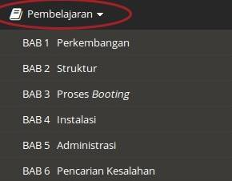

Anda mengalami kesulitan dalam menggunakan modul ini? Maka Anda berada pada menu yang tepat. Silakan pilih sub menu di bawah ini.
Pada modul ini terdapat menu utama yang dapat Anda akses di pojok kiri atas.
Di dalamnya terdiri dari home, info, pembelajaran, evaluasi, dan bantuan.
Untuk pembelajaran terdiri dari bab-bab yang ada dalam modul ini. 
HOME
Merupakan bagian awal yang pertama kali Anda akses ketikan membuka modul ini.
Pada bagian ini Anda dapat langsung memulai pembelajaran atau memilih "Ketahui Lebih Lanjut" untuk melihat bantuan ini.
INFO
Berisi informasi awal dari modul yang menyediakan pilihan Bab 1 sampai 6. Anda bisa memilih Bab yang Anda inginkan dengan cara mengeklik pada Bab yang sesuai.
PEMBELAJARAN
Terdiri dari sub menu Bab 1 sampai 6 yang akan membawa Anda pada sesuai Bab yang Anda pilih.
Pada setiap pembelajaran terdapat tujuan, uraian materi, lembar kerja, dan rangkuman.
EVALUASI
Bagian ini terdiri dari 6 evaluasi.
BANTUAN
Merupakan bagian yang Anda lihat saat ini. Terdiri dari 3 sub menu yaitu petunjuk ini, glosarium, dan kontak.
Selamat Belajar & Semoga Sukses :)
Distro atau distribusi Linux merupakan gabungan antara kernel Linux dengan program dan utilitas tambahan berupa kumpulan paket-paket software dan dapat digunakan menjadi sebuah sistem operasi siap pakai.
GNU adalah suatu proyek free software yang dikembangkan oleh Richard Matthew Stallman pada 1984.
GNU GPL (GNU General Public Liscense) merupakan suatu lisensi yang disusun oleh Free Software Foundation (FSF) dimana siapa saja boleh menggunakan sesuatu atau memodifikasinya, tetapi tidak boleh membuatnya menjadi milik sendiri.
GParted adalah suatu aplikasi pada Linux untuk membuat, mengatur, dan menghapus partisi harrdisk.
Kernel adalah suatu perangkat lunak yang menjadi bagian utama dari sebuah sistem operasi. Tugasnya melayani bermacam program aplikasi untuk mengakses perangkat keras komputer.
Wine adalah suatu program emulator pada Linux yang digunakan untuk menjalankan program-program Windows.
ikidiondr@gmail.com
http://diondr.blogspot.com
fb.com/ikidiondr
@diondr
{kind=link}
{kind=link}
{kind=link}
{kind=link}
{kind=link}
{kind=link}
{kind=link}
{kind=link}
{kind=link}
{kind=link}
{kind=link}
{kind=link}
{kind=link}
{kind=link}